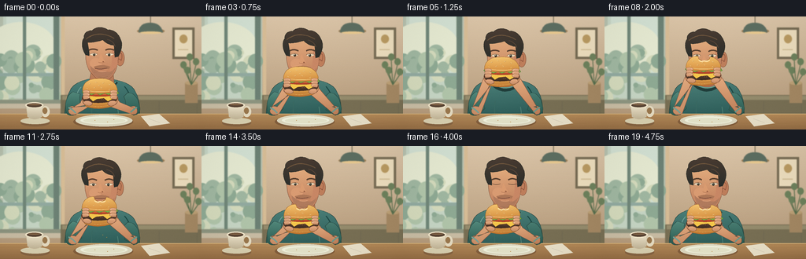
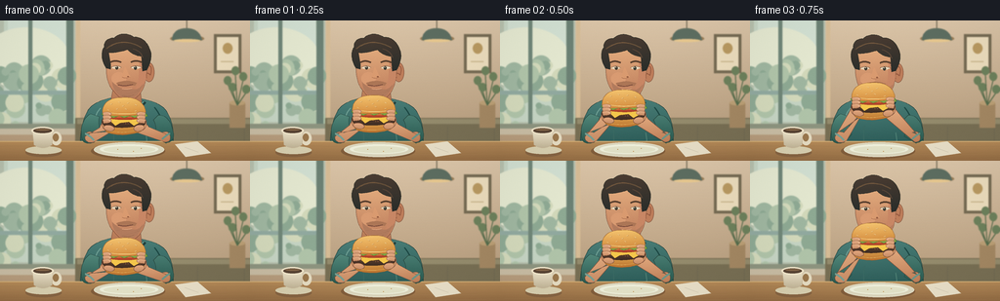
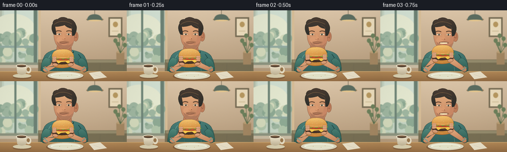
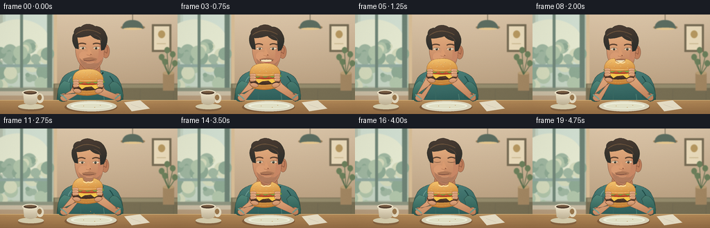

CODING AGENTS AS PIXEL WORLD MODELS
traex/GPT-6.1-Sol · motion_rationality_0001
点击播放 · 原生 RGB 像素
逐轮保存的候选
回放视频、检查图与代码变化。
每份候选均可单独播放。实际图片检查记录在下方工具轨迹中。
候选 01播放与检查图
点击播放 · 原生 RGB 像素


展开代码变化
--- 上一保存版本
+++ 本次保存版本
@@ -0,0 +1,245 @@
+from pathlib import Path
+import math
+import numpy as np
+from PIL import Image, ImageDraw, ImageFilter
+import artifact_io
+
+ROOT=Path(__file__).resolve().parent
+W,H,S=256,144,4
+SZ=(W*S,H*S)
+rng=np.random.default_rng(81)
+
+def col(c):
+ if isinstance(c,str):
+ c=c.lstrip('#');return tuple(int(c[i:i+2],16) for i in (0,2,4))
+ return tuple(c)
+def scale(p):return tuple(v*S for v in p)
+def path(commands):
+ points=[];last=(0,0)
+ for cmd in commands:
+ typ=cmd[0];a=cmd[1:]
+ if typ=='M' or typ=='L':last=(a[0],a[1]);points.append(last)
+ elif typ=='C':
+ p0=np.array(last);p1=np.array(a[:2]);p2=np.array(a[2:4]);p3=np.array(a[4:6])
+ for t in np.linspace(0,1,25)[1:]:
+ p=(1-t)**3*p0+3*(1-t)**2*t*p1+3*(1-t)*t*t*p2+t**3*p3
+ points.append(tuple(p))
+ last=tuple(p3)
+ elif typ=='Q':
+ p0=np.array(last);p1=np.array(a[:2]);p2=np.array(a[2:4])
+ for t in np.linspace(0,1,18)[1:]:points.append(tuple((1-t)**2*p0+2*t*(1-t)*p1+t*t*p2))
+ last=tuple(p2)
+ return points
+class Canvas:
+ def __init__(self,im):self.im=im;self.d=ImageDraw.Draw(im)
+ def poly(self,pts,fill,outline=None,width=.6):
+ p=[scale(v) for v in pts];self.d.polygon(p,fill=col(fill))
+ if outline:self.d.line(p+[p[0]],fill=col(outline),width=max(1,int(width*S)),joint='curve')
+ def curve(self,p,fill,outline=None,width=.6):self.poly(path(p),fill,outline,width)
+ def line(self,p,fill,width=1):self.d.line([scale(x) for x in p],fill=col(fill),width=max(1,int(width*S)),joint='curve')
+ def bez(self,p,fill,width=1):self.line(path(p),fill,width)
+ def ell(self,box,fill,outline=None,width=.5):self.d.ellipse(scale(box),fill=col(fill),outline=col(outline) if outline else None,width=max(1,int(width*S)))
+ def rect(self,box,fill):self.d.rectangle(scale(box),fill=col(fill))
+ def grad(self,pts,top,bottom,outline=None,width=.6,light=0):
+ mask=Image.new('L',SZ);md=ImageDraw.Draw(mask);md.polygon([scale(v) for v in pts],fill=255)
+ arr=np.asarray(pts);x0,y0=arr.min(0);x1,y1=arr.max(0)
+ yy=np.arange(H*S)[:,None]/S;xx=np.arange(W*S)[None,:]/S
+ t=np.clip((yy-y0)/max(y1-y0,1),0,1)
+ a=np.array(col(top));b=np.array(col(bottom))
+ f=np.broadcast_to(a[None,None,:]*(1-t[:,:,None])+b[None,None,:]*t[:,:,None],(H*S,W*S,3)).copy()
+ if light:f+=light*np.exp(-((xx-x0-(x1-x0)*.3)/max((x1-x0)*.5,1))**2)[:,:,None]
+ layer=Image.fromarray(np.uint8(np.clip(f,0,255)));self.im.paste(layer,(0,0),mask)
+ self.d=ImageDraw.Draw(self.im)
+ if outline:self.line(pts+[pts[0]],outline,width)
+ def gcurve(self,p,a,b,outline=None,width=.6,light=0):self.grad(path(p),a,b,outline,width,light)
+
+# Warm cafe, shallow-depth background and quiet morning window.
+bg=Image.new('RGB',SZ);c=Canvas(bg)
+y=np.linspace(0,1,H*S)[:,None,None];a=np.array([220,198,169]);b=np.array([175,148,116]);ar=np.broadcast_to((1-y)*a+y*b,(H*S,W*S,3)).astype('uint8');bg=Image.fromarray(ar);c=Canvas(bg)
+c.rect((0,0,77,116),'b7c1ae');c.rect((4,0,70,104),'c6d5c4')
+c.rect((8,0,67,76),'d2e0d2');c.ell((-18,7,71,71),'e5e9d1')
+# Outside soft silhouettes.
+for _ in range(50):
+ x=rng.uniform(-10,69);yy=rng.uniform(45,110);r=rng.uniform(3,12)
+ c.ell((x-r,yy-r,x+r,yy+r),rng.choice(['a0b7a1','8faa94','b1c5aa','d4dabc']))
+c.rect((0,72,72,76),'92aaa0');c.rect((29,0,33,106),'718779');c.rect((68,0,75,115),'6d8275');c.rect((0,106,78,113),'8e9580')
+c.rect((0,111,78,117),'c9bda4')
+# Cafe architectural details.
+c.rect((78,0,82,118),'d7bd96');c.rect((219,14,247,54),'776c54');c.rect((222,17,244,51),'ecddbd')
+c.ell((228,23,238,34),'b99a62');c.line([(226,42),(239,42)],'c4af85',1)
+c.line([(191,0),(191,15)],'6c6652',1)
+c.ell((174,15,209,22),'9b8059');c.curve([('M',176,20),('Q',177,8,191,8),('Q',204,8,207,20)],'5d6e61');c.ell((178,19,205,22),'e9c990')
+# Bench upholstery.
+c.rect((77,100,256,128),'786f54');c.rect((79,101,256,106),'958c6d')
+for x in [98,150,202,250]:c.line([(x,108),(x,127)],'6c654f',.6)
+# small background plant
+c.rect((235,84,251,110),'a48863');c.ell((235,82,251,87),'bca076')
+for x,yy in [(233,65),(249,61),(238,72),(252,74),(241,55)]:
+ c.line([(243,87),(x,yy)],'566d4c',1)
+ c.ell((x-4,yy-8,x+4,yy+1),'6d815c')
+bg=bg.filter(ImageFilter.GaussianBlur(.55*S))
+
+SKIN='d5986e';EDGE='83553f'
+def smooth(t):t=max(0,min(1,t));return t*t*(3-2*t)
+
+def render(i):
+ t=i/4
+ # One continuous bite: lift, bite, pull back and chew.
+ lift=smooth(t/1.45) if t<1.65 else 1-.82*smooth((t-2.05)/1.25)
+ lean=.9*lift
+ chew=0 if t<2.35 else math.sin((t-2.35)*10)
+ hx=-1.8*lift;hy=1.6*lift+.2*chew
+ im=bg.copy();c=Canvas(im)
+ # seating and torso silhouette
+ c.ell((79,111,182,154),'536956')
+ c.gcurve([('M',116,79),('C',108,81,94,84,89,94),('C',81,109,82,129,81,143),('L',178,143),('C',176,128,181,109,171,94),('C',166,85,152,82,143,80)],'497d76','204e4b','263f39',.7,4)
+ c.gcurve([('M',116+hx,69+hy),('L',143+hx,68+hy),('L',145,85),('Q',139,94,128,92),('Q',118,90,113,85)],'c58a61','a7674e',EDGE,.6)
+ # ribbed collar opening
+ c.bez([('M',112,83),('C',117,95,139,99,148,83)],'213f3c',4)
+ c.bez([('M',112,82),('C',119,92,138,95,147,83)],'64978a',1.8)
+ c.bez([('M',103,90),('Q',94,99,98,116)],'70a094',1)
+ c.bez([('M',158,89),('Q',170,103,164,118)],'1d4945',1.3)
+ c.bez([('M',117,108),('Q',115,125,119,139)],'3a6962',1)
+ c.bez([('M',149,115),('Q',152,130,149,140)],'4f8074',1)
+ # head positions allow gentle forward nod
+ def trans(commands):
+ out=[]
+ for cmd in commands:
+ a=list(cmd[1:]);a=[v+(hx if j%2==0 else hy) for j,v in enumerate(a)];out.append(tuple([cmd[0]]+a))
+ return out
+ def face(p,a,b=None,outline=None,width=.6):
+ if b:c.gcurve(trans(p),a,b,outline,width,3)
+ else:c.curve(trans(p),a,outline,width)
+ def el(box,fill,out=None,w=.5):c.ell((box[0]+hx,box[1]+hy,box[2]+hx,box[3]+hy),fill,out,w)
+ def bz(p,fill,w=1):c.bez(trans(p),fill,w)
+ # far ear, main face and lower cheek planes
+ el((147,43,158,63),'be7e5b',EDGE,.6)
+ bz([('M',151,47),('Q',157,45,154,56),('Q',149,51,150,59)],'90563e',.8)
+ face([('M',111,32),('C',111,19,130,17,145,26),('C',152,31,151,45,150,54),('C',149,67,145,76,137,81),('C',132,84,121,80,117,73),('C',112,69,109,59,109,50),('L',107,44)],'e5b080','ba7858',EDGE,.65)
+ face([('M',143,40),('Q',154,53,147,67),('Q',143,77,136,79),('Q',141,68,142,58)],'c88765')
+ el((114,53,129,66),'d99b72')
+ # hair cap, sideburn and tufts
+ face([('M',109,49),('C',104,42,103,32,107,27),('C',106,22,111,17,117,18),('C',122,12,132,13,137,17),('C',145,16,151,23,153,29),('C',157,36,153,46,150,51),('L',146,52),('L',145,37),('Q',136,36,131,30),('Q',118,34,111,33),('L',113,45),('L',113,50)],'493a30','292d2a','2d3028',.7)
+ bz([('M',109,29),('C',118,21,132,20,145,28)],'66503a',1.3)
+ bz([('M',114,26),('Q',124,20,132,23)],'816143',.65)
+ bz([('M',136,29),('Q',144,31,146,38)],'594537',1)
+ # eyes naturally look down toward burger
+ bz([('M',113,43),('Q',118,40,124,43)],'59402f',1.8)
+ bz([('M',134,43),('Q',139,40,145,43)],'57402f',1.9)
+ blink= i in (6,7,16)
+ if blink:
+ bz([('M',114,48),('Q',119,50,124,48)],'684a36',.9)
+ bz([('M',134,48),('Q',139,50,145,48)],'684a36',.9)
+ else:
+ face([('M',114,48),('Q',119,45,124,48),('Q',120,51,115,49)],'ead7ba')
+ face([('M',134,48),('Q',139,45,145,48),('Q',140,51,135,49)],'ead7ba')
+ el((118,47,121,50.3),'413c31');el((137,47,140.1,50.5),'393b32')
+ bz([('M',114,48),('Q',119,45,124,48)],'6b4e37',.65)
+ bz([('M',134,48),('Q',139,45,145,48)],'6b4e37',.65)
+ el((118.8,47.2,119.7,48),'f7e4ca');el((137.8,47.4,138.6,48.2),'f7e4ca')
+ # nose volume
+ face([('M',128,47),('Q',126,54,125,57),('Q',126,60,132,59),('Q',135,58,132,56)],'da9b70')
+ bz([('M',125,58),('Q',128,60,133,58)],'a86d4e',.7)
+ el((130,57,132,58.2),'935b41')
+ # subtle beard shadow and chin
+ face([('M',115,63),('Q',116,76,129,80),('Q',141,82,147,65),('Q',140,73,135,70),('Q',124,73,115,63)],'b17b5d')
+ face([('M',119,64),('Q',130,60,140,64),('L',138,67),('Q',129,65,121,67)],'ac7656')
+ opening=max(0,math.sin(math.pi*max(0,min(1,(t-.65)/1.55))))*lift
+ if opening>.1:
+ el((120,64,138,66+7*opening),'59372d')
+ face([('M',121,65),('Q',130,63.8,137,65),('L',136,67),('Q',128,68,122,66.8)],'f3dfb5')
+ el((126,68,136,69+3*opening),'b76a57')
+ else:
+ bz([('M',121,66+.4*chew),('Q',128,68+chew*.7,136,65.5)],'784b3c',1.1)
+ bz([('M',125,70+.5*chew),('Q',131,71+.5*chew,135,69.5)],'dfa47d',.8)
+ bz([('M',125,77),('Q',131,79,137,76)],'926548',.6)
+ # scattered stubble, stable on skin, not crawling
+ for j in range(23):
+ xx=119+(j*7%24);yy=71+(j*5%7)
+ if ((xx-130)/14)**2+((yy-71)/9)**2<1:
+ c.line([(xx+hx,yy+hy),(xx+.3+hx,yy+.6+hy)],'9a6c50',.35)
+ # tabletop
+ c.gcurve([('M',0,124),('L',256,124),('L',256,144),('L',0,144)],'b58b59','936c44')
+ c.line([(0,124),(256,124)],'d2ac74',1)
+ for yy in (129,137,142):c.bez([('M',0,yy),('C',67,yy-1,184,yy+2,256,yy)],'a27a4f',.4)
+ c.ell((93,126,169,142),'825e3c');c.ell((96,125,168,140),'dbd6bd','ede9d4',.7);c.ell((102,127,162,137),'eff0dc');c.ell((106,129,159,136),'e3e2c8')
+ # napkin with tiny crumbs and small coffee cup
+ c.poly([(179,127),(202,124),(216,136),(190,140)],'e8dfc7');c.line([(189,130),(203,135)],'c5bca7',.5)
+ c.ell((26,131,63,140),'866442');c.ell((26,129,63,137),'d8cfaf')
+ c.ell((52,114,63,128),'e5dbc1');c.ell((54,116,60,124),'9a784e')
+ c.gcurve([('M',33,113),('L',54,113),('L',53,128),('Q',44,134,35,128)],'f0e6cd','c1b496','c5b394',.5)
+ c.ell((32,109,55,117),'f0e5c9');c.ell((34,110.5,53,115.5),'574333');c.ell((36,111,51,113),'826447')
+ # burger fixed between hands, smooth movement toward mouth
+ bx=127-1.5*lift;by=103-29*lift
+ # forearms naturally pivot about resting elbows as food rises
+ left_hand=(bx-18,by+4);right_hand=(bx+18,by+4)
+ lx,ly=left_hand;rx,ry=right_hand
+ c.gcurve([('M',93,96),('C',85,99,81,112,84,122),('Q',87,128,96,125),('L',104,117),('Q',100,105,102,99)],'52887b','2b5a50','28473e',.65)
+ c.gcurve([('M',162,97),('Q',174,97,177,114),('Q',180,124,170,126),('L',158,119),('Q',162,109,157,102)],'497d72','28584f','28473e',.65)
+ c.gcurve([('M',88,116),('Q',90,113,96,115),('L',lx+4,ly+5),('Q',lx+7,ly+1,lx+2,ly-3),('Q',lx-4,ly-5,lx-7,ly+3),('L',87,119),('Q',86,123,91,125),('Q',95,126,99,123),('L',lx+5,ly+7)],'dfa77c','c38861',EDGE,.65,5)
+ c.gcurve([('M',166,115),('Q',173,112,174,119),('Q',175,125,169,125),('L',rx-5,ry+8),('Q',rx-8,ry+4,rx-3,ry-3),('Q',rx+3,ry-4,rx+7,ry+2),('L',171,117)],'dfa77b','bc7c56',EDGE,.65,5)
+ # hands behind burger, curled palms
+ c.ell((lx-5,ly-9,lx+7,ly+6),'d79a70',EDGE,.5)
+ c.ell((rx-7,ry-9,rx+5,ry+6),'dba076',EDGE,.5)
+ # hamburger layers: lower bun, meat, cheese, tomato, ruffled lettuce, crown
+ def bp(p):return [(x+bx,y+by) for x,y in p]
+ def bpath(cmd):return [tuple([v[0]]+[x+(bx if j%2==0 else by) for j,x in enumerate(v[1:])]) for v in cmd]
+ c.gcurve(bpath([('M',-21,3),('Q',-21,12,-13,13),('Q',0,16,14,12),('Q',21,10,21,3)]),'dba34e','b96f2c','97602c',.55,4)
+ c.bez(bpath([('M',-16,10),('Q',0,14,15,9)]),'e8b862',.6)
+ c.gcurve(bpath([('M',-22,-2),('Q',-24,2,-20,5),('Q',0,9,21,4),('Q',24,1,20,-3)]),'654330','3e2e24','4a3021',.5)
+ for j in range(16):
+ x=-18+j*2.4;yy=2+.8*math.sin(j*5)
+ c.ell((bx+x,by+yy,bx+x+1.1,by+yy+.5),'94603a')
+ c.poly(bp([(-21,-3),(-9,-4),(4,-3),(20,-3),(17,1),(10,5),(5,1),(-4,2),(-9,5),(-14,0),(-21,0)]),'f5c74c','c8952e',.45)
+ c.gcurve(bpath([('M',-21,-6),('Q',0,-8,21,-6),('L',21,-3),('Q',2,1,-21,-3)]),'d6673a','a83c29','a74c2b',.45)
+ c.bez(bpath([('M',-18,-5),('Q',0,-3,19,-5)]),'f29750',.7)
+ lettuce=[(-23,-7),(-20,-10),(-15,-8),(-12,-10),(-7,-8),(-3,-11),(2,-8),(7,-10),(11,-8),(16,-10),(22,-8),(24,-5),(20,-3),(15,-5),(11,-3),(6,-5),(0,-3),(-5,-5),(-11,-3),(-15,-5),(-20,-4)]
+ c.poly(bp(lettuce),'81aa46','4f782f',.6)
+ c.line(bp([(-19,-7),(-13,-6),(-7,-7),(-1,-5),(6,-7),(13,-6),(19,-7)]),'b4c85c',.7)
+ # crown with scalloped missing bite after contact, not a disappearing burger
+ bite=smooth((t-1.65)/.4)
+ bun=[('M',-22,-8),('C',-22,-20,-13,-24,-2,-24),('C',11,-25,21,-20,22,-9),('Q',20,-5,0,-5),('Q',-18,-4,-22,-8)]
+ if bite>0:
+ # silhouette removes small mouth-shaped bite from the back-facing top edge
+ d=4.5*bite
+ bun=[('M',-22,-8),('C',-22,-19,-14,-24,-7,-23.6),('Q',-6,-23+d,-3,-23+d),('Q',-2,-21+d,1,-22+d),('Q',3,-21+d,5,-23+d),('Q',8,-23+d,9,-23),('C',17,-21,22,-16,22,-9),('Q',20,-5,0,-5),('Q',-18,-4,-22,-8)]
+ c.gcurve(bpath(bun),'edbd68','ce8639','a56b31',.6,8)
+ c.bez(bpath([('M',-19,-9),('Q',0,-5,20,-9)]),'f6d489',.75)
+ if bite>.15:
+ c.bez(bpath([('M',-6,-23+4.5*bite),('Q',-3,-20+4.5*bite,1,-22+4.5*bite),('Q',5,-20+4.5*bite,8,-23+4.5*bite)]),'ffe0a3',1.5)
+ seeds=[(-13,-17,-.4),(-5,-19,.3),(4,-18,-.4),(12,-16,.5),(-16,-11,.4),(-7,-12,-.3),(2,-12,.3),(12,-10,-.3),(-1,-15,-.4)]
+ for x,yy,ang in seeds:
+ if bite>.3 and -6<x<8 and yy<-18:continue
+ c.line([(bx+x-1,by+yy-ang),(bx+x+1,by+yy+ang)],'b98443',.85)
+ c.line([(bx+x-1,by+yy-.3-ang),(bx+x+.6,by+yy-.3+ang)],'ffe5ab',.7)
+ # Fingers wrap around the sides and under the bun; thumbs stay below food.
+ for side in [-1,1]:
+ x=bx+side*19
+ for j in range(3):
+ yy=by-7+j*3.5
+ c.gcurve([('M',x+side*3,yy-1.3),('Q',x-side*3,yy-3,x-side*6,yy-1),('Q',x-side*7,yy+1,x-side*3,yy+2),('L',x+side*2,yy+2.5)],'e8b087','c58a64',EDGE,.45)
+ c.bez([('M',x-side*3.3,yy-.8),('Q',x-side*5,yy-.3,x-side*4.5,yy+.8)],'f2c19b',.5)
+ c.gcurve([('M',x+side*1,by+5),('Q',x-side*5,by+3,x-side*9,by+7),('Q',x-side*10,by+10,x-side*5,by+11),('Q',x+side*1,by+10,x+side*2,by+7)],'e5a980','c68c65',EDGE,.5)
+ # Light sleeve cuffs at elbows reinforce arm articulation.
+ c.bez([('M',87,116),('Q',92,118,96,123)],'78a093',2)
+ c.bez([('M',166,122),('Q',171,117,174,116)],'6c9688',2)
+ # Fixed crumbs on plate, a couple fall after the bite.
+ for x,yy in [(120,132),(144,131),(136,134)]:c.ell((x,yy,x+1,yy+.6),'b87d38')
+ if 2.25<t<3:
+ dt=t-2.25
+ for k in range(2):
+ yy=by+10+60*dt*dt+k*3;xx=bx+4+k*5
+ if yy<132:c.ell((xx,yy,xx+.8,yy+.7),'c18d43')
+ # Subtle image-wide cinematic warmth and fine paper grain, stable across time.
+ out=im.resize((W,H),Image.Resampling.LANCZOS)
+ aa=np.asarray(out).astype(np.float32)
+ yy,xx=np.mgrid[0:H,0:W]
+ vign=1-.065*((xx-127)/180)**2-.03*((yy-69)/105)**2
+ aa*=vign[:,:,None]
+ grain=np.random.default_rng(33).normal(0,.36,(H,W,1));aa+=grain
+ return np.clip(aa,0,255).astype(np.uint8)
+
+if __name__=='__main__':
+ frames=np.stack([render(i) for i in range(20)])
+ artifact_io.save(frames,ROOT)
+ print('Saved',frames.shape,frames.dtype)
候选 02播放与检查图
点击播放 · 原生 RGB 像素


展开代码变化
--- 上一保存版本
+++ 本次保存版本
@@ -170,7 +170,7 @@
c.gcurve([('M',33,113),('L',54,113),('L',53,128),('Q',44,134,35,128)],'f0e6cd','c1b496','c5b394',.5)
c.ell((32,109,55,117),'f0e5c9');c.ell((34,110.5,53,115.5),'574333');c.ell((36,111,51,113),'826447')
# burger fixed between hands, smooth movement toward mouth
- bx=127-1.5*lift;by=103-29*lift
+ bx=127-1.5*lift;by=103-16*lift
# forearms naturally pivot about resting elbows as food rises
left_hand=(bx-18,by+4);right_hand=(bx+18,by+4)
lx,ly=left_hand;rx,ry=right_hand
可观测工具轨迹
实际执行的命令与返回图片。
命令 1exit 0
/bin/bash -lc "ls -la && cat prompt.txt && printf '\\n---RULES---\\n' && cat GENERATION_RULES.md && printf '\\n---SPEC---\\n' && cat task_spec.json"
命令 2exit 0
/bin/bash -lc "cat artifact_io.py && python - <<'PY'
import PIL, numpy
try:
import aggdraw
print('aggdraw available')
except: pass
PY"命令 3exit 0
/bin/bash -lc "cat > generate.py <<'PY'
from pathlib import Path
import math
import numpy as np
from PIL import Image, ImageDraw, ImageFilter
import artifact_io
ROOT=Path(__file__).resolve().parent
W,H,S=256,144,4
SZ=(W*S,H*S)
rng=np.random.default_rng(81)
def col(c):
if isinstance(c,str):
c=c.lstrip('#');return tuple(int(c[i:i+2],16) for i in (0,2,4))
return tuple(c)
def scale(p):return tuple(v*S for v in p)
def path(commands):
points=[];last=(0,0)
for cmd in commands:
typ=cmd[0];a=cmd[1:]
if typ=='M' or typ=='L':last=(a[0],a[1]);points.append(last)
elif typ=='C':
p0=np.array(last);p1=np.array(a[:2]);p2=np.array(a[2:4]);p3=np.array(a[4:6])
for t in np.linspace(0,1,25)[1:]:
p=(1-t)**3*p0+3*(1-t)**2*t*p1+3*(1-t)*t*t*p2+t**3*p3
points.append(tuple(p))
last=tuple(p3)
elif typ=='Q':
p0=np.array(last);p1=np.array(a[:2]);p2=np.array(a[2:4])
for t in np.linspace(0,1,18)[1:]:points.append(tuple((1-t)**2*p0+2*t*(1-t)*p1+t*t*p2))
last=tuple(p2)
return points
class Canvas:
def __init__(self,im):self.im=im;self.d=ImageDraw.Draw(im)
def poly(self,pts,fill,outline=None,width=.6):
p=[scale(v) for v in pts];self.d.polygon(p,fill=col(fill))
if outline:self.d.line(p+[p[0]],fill=col(outline),width=max(1,int(width*S)),joint='curve')
def curve(self,p,fill,outline=None,width=.6):self.poly(path(p),fill,outline,width)
def line(self,p,fill,width=1):self.d.line([scale(x) for x in p],fill=col(fill),width=max(1,int(width*S)),joint='curve')
def bez(self,p,fill,width=1):self.line(path(p),fill,width)
def ell(self,box,fill,outline=None,width=.5):self.d.ellipse(scale(box),fill=col(fill),outline=col(outline) if outline else None,width=max(1,int(width*S)))
def rect(self,box,fill):self.d.rectangle(scale(box),fill=col(fill))
def grad(self,pts,top,bottom,outline=None,width=.6,light=0):
mask=Image.new('L',SZ);md=ImageDraw.Draw(mask);md.polygon([scale(v) for v in pts],fill=255)
arr=np.asarray(pts);x0,y0=arr.min(0);x1,y1=arr.max(0)
yy=np.arange(H*S)[:,None]/S;xx=np.arange(W*S)[None,:]/S
t=np.clip((yy-y0)/max(y1-y0,1),0,1)
a=np.array(col(top));b=np.array(col(bottom))
f=np.broadcast_to(a[None,None,:]*(1-t[:,:,None])+b[None,None,:]*t[:,:,None],(H*S,W*S,3)).copy()
if light:f+=light*np.exp(-((xx-x0-(x1-x0)*.3)/max((x1-x0)*.5,1))**2)[:,:,None]
layer=Image.fromarray(np.uint8(np.clip(f,0,255)));self.im.paste(layer,(0,0),mask)
self.d=ImageDraw.Draw(self.im)
if outline:self.line(pts+[pts[0]],outline,width)
def gcurve(self,p,a,b,outline=None,width=.6,light=0):self.grad(path(p),a,b,outline,width,light)
# Warm cafe, shallow-depth background and quiet morning window.
bg=Image.new('RGB',SZ);c=Canvas(bg)
y=np.linspace(0,1,H*S)[:,None,None];a=np.array([220,198,169]);b=np.array([175,148,116]);ar=np.broadcast_to((1-y)*a+y*b,(H*S,W*S,3)).astype('uint8');bg=Image.fromarray(ar);c=Canvas(bg)
c.rect((0,0,77,116),'b7c1ae');c.rect((4,0,70,104),'c6d5c4')
c.rect((8,0,67,76),'d2e0d2');c.ell((-18,7,71,71),'e5e9d1')
# Outside soft silhouettes.
for _ in range(50):
x=rng.uniform(-10,69);yy=rng.uniform(45,110);r=rng.uniform(3,12)
c.ell((x-r,yy-r,x+r,yy+r),rng.choice(['a0b7a1','8faa94','b1c5aa','d4dabc']))
c.rect((0,72,72,76),'92aaa0');c.rect((29,0,33,106),'718779');c.rect((68,0,75,115),'6d8275');c.rect((0,106,78,113),'8e9580')
c.rect((0,111,78,117),'c9bda4')
# Cafe architectural details.
c.rect((78,0,82,118),'d7bd96');c.rect((219,14,247,54),'776c54');c.rect((222,17,244,51),'ecddbd')
c.ell((228,23,238,34),'b99a62');c.line([(226,42),(239,42)],'c4af85',1)
c.line([(191,0),(191,15)],'6c6652',1)
c.ell((174,15,209,22),'9b8059');c.curve([('M',176,20),('Q',177,8,191,8),('Q',204,8,207,20)],'5d6e61');c.ell((178,19,205,22),'e9c990')
# Bench upholstery.
c.rect((77,100,256,128),'786f54');c.rect((79,101,256,106),'958c6d')
for x in [98,150,202,250]:c.line([(x,108),(x,127)],'6c654f',.6)
# small background plant
c.rect((235,84,251,110),'a48863');c.ell((235,82,251,87),'bca076')
for x,yy in [(233,65),(249,61),(238,72),(252,74),(241,55)]:
c.line([(243,87),(x,yy)],'566d4c',1)
c.ell((x-4,yy-8,x+4,yy+1),'6d815c')
bg=bg.filter(ImageFilter.GaussianBlur(.55*S))
SKIN='d5986e';EDGE='83553f'
def smooth(t):t=max(0,min(1,t));return t*t*(3-2*t)
def render(i):
t=i/4
# One continuous bite: lift, bite, pull back and chew.
lift=smooth(t/1.45) if t<1.65 else 1-.82*smooth((t-2.05)/1.25)
lean=.9*lift
chew=0 if t<2.35 else math.sin((t-2.35)*10)
hx=-1.8*lift;hy=1.6*lift+.2*chew
im=bg.copy();c=Canvas(im)
# seating and torso silhouette
c.ell((79,111,182,154),'536956')
c.gcurve([('M',116,79),('C',108,81,94,84,89,94),('C',81,109,82,129,81,143),('L',178,143),('C',176,128,181,109,171,94),('C',166,85,152,82,143,80)],'497d76','204e4b','263f39',.7,4)
c.gcurve([('M',116+hx,69+hy),('L',143+hx,68+hy),('L',145,85),('Q',139,94,128,92),('Q',118,90,113,85)],'c58a61','a7674e',EDGE,.6)
# ribbed collar opening
c.bez([('M',112,83),('C',117,95,139,99,148,83)],'213f3c',4)
c.bez([('M',112,82),('C',119,92,138,95,147,83)],'64978a',1.8)
c.bez([('M',103,90),('Q',94,99,98,116)],'70a094',1)
c.bez([('M',158,89),('Q',170,103,164,118)],'1d4945',1.3)
c.bez([('M',117,108),('Q',115,125,119,139)],'3a6962',1)
c.bez([('M',149,115),('Q',152,130,149,140)],'4f8074',1)
# head positions allow gentle forward nod
def trans(commands):
out=[]
for cmd in commands:
a=list(cmd[1:]);a=[v+(hx if j%2==0 else hy) for j,v in enumerate(a)];out.append(tuple([cmd[0]]+a))
return out
def face(p,a,b=None,outline=None,width=.6):
if b:c.gcurve(trans(p),a,b,outline,width,3)
else:c.curve(trans(p),a,outline,width)
def el(box,fill,out=None,w=.5):c.ell((box[0]+hx,box[1]+hy,box[2]+hx,box[3]+hy),fill,out,w)
def bz(p,fill,w=1):c.bez(trans(p),fill,w)
# far ear, main face and lower cheek planes
el((147,43,158,63),'be7e5b',EDGE,.6)
bz([('M',151,47),('Q',157,45,154,56),('Q',149,51,150,59)],'90563e',.8)
face([('M',111,32),('C',111,19,130,17,145,26),('C',152,31,151,45,150,54),('C',149,67,145,76,137,81),('C',132,84,121,80,117,73),('C',112,69,109,59,109,50),('L',107,44)],'e5b080','ba7858',EDGE,.65)
face([('M',143,40),('Q',154,53,147,67),('Q',143,77,136,79),('Q',141,68,142,58)],'c88765')
el((114,53,129,66),'d99b72')
# hair cap, sideburn and tufts
face([('M',109,49),('C',104,42,103,32,107,27),('C',106,22,111,17,117,18),('C',122,12,132,13,137,17),('C',145,16,151,23,153,29),('C',157,36,153,46,150,51),('L',146,52),('L',145,37),('Q',136,36,131,30),('Q',118,34,111,33),('L',113,45),('L',113,50)],'493a30','292d2a','2d3028',.7)
bz([('M',109,29),('C',118,21,132,20,145,28)],'66503a',1.3)
bz([('M',114,26),('Q',124,20,132,23)],'816143',.65)
bz([('M',136,29),('Q',144,31,146,38)],'594537',1)
# eyes naturally look down toward burger
bz([('M',113,43),('Q',118,40,124,43)],'59402f',1.8)
bz([('M',134,43),('Q',139,40,145,43)],'57402f',1.9)
blink= i in (6,7,16)
if blink:
bz([('M',114,48),('Q',119,50,124,48)],'684a36',.9)
bz([('M',134,48),('Q',139,50,145,48)],'684a36',.9)
else:
face([('M',114,48),('Q',119,45,124,48),('Q',120,51,115,49)],'ead7ba')
face([('M',134,48),('Q',139,45,145,48),('Q',140,51,135,49)],'ead7ba')
el((118,47,121,50.3),'413c31');el((137,47,140.1,50.5),'393b32')
bz([('M',114,48),('Q',119,45,124,48)],'6b4e37',.65)
bz([('M',134,48),('Q',139,45,145,48)],'6b4e37',.65)
el((118.8,47.2,119.7,48),'f7e4ca');el((137.8,47.4,138.6,48.2),'f7e4ca')
# nose volume
face([('M',128,47),('Q',126,54,125,57),('Q',126,60,132,59),('Q',135,58,132,56)],'da9b70')
bz([('M',125,58),('Q',128,60,133,58)],'a86d4e',.7)
el((130,57,132,58.2),'935b41')
# subtle beard shadow and chin
face([('M',115,63),('Q',116,76,129,80),('Q',141,82,147,65),('Q',140,73,135,70),('Q',124,73,115,63)],'b17b5d')
face([('M',119,64),('Q',130,60,140,64),('L',138,67),('Q',129,65,121,67)],'ac7656')
opening=max(0,math.sin(math.pi*max(0,min(1,(t-.65)/1.55))))*lift
if opening>.1:
el((120,64,138,66+7*opening),'59372d')
face([('M',121,65),('Q',130,63.8,137,65),('L',136,67),('Q',128,68,122,66.8)],'f3dfb5')
el((126,68,136,69+3*opening),'b76a57')
else:
bz([('M',121,66+.4*chew),('Q',128,68+chew*.7,136,65.5)],'784b3c',1.1)
bz([('M',125,70+.5*chew),('Q',131,71+.5*chew,135,69.5)],'dfa47d',.8)
bz([('M',125,77),('Q',131,79,137,76)],'926548',.6)
# scattered stubble, stable on skin, not crawling
for j in range(23):
xx=119+(j*7%24);yy=71+(j*5%7)
if ((xx-130)/14)**2+((yy-71)/9)**2<1:
c.line([(xx+hx,yy+hy),(xx+.3+hx,yy+.6+hy)],'9a6c50',.35)
# tabletop
c.gcurve([('M',0,124),('L',256,124),('L',256,144),('L',0,144)],'b58b59','936c44')
c.line([(0,124),(256,124)],'d2ac74',1)
for yy in (129,137,142):c.bez([('M',0,yy),('C',67,yy-1,184,yy+2,256,yy)],'a27a4f',.4)
c.ell((93,126,169,142),'825e3c');c.ell((96,125,168,140),'dbd6bd','ede9d4',.7);c.ell((102,127,162,137),'eff0dc');c.ell((106,129,159,136),'e3e2c8')
# napkin with tiny crumbs and small coffee cup
c.poly([(179,127),(202,124),(216,136),(190,140)],'e8dfc7');c.line([(189,130),(203,135)],'c5bca7',.5)
c.ell((26,131,63,140),'866442');c.ell((26,129,63,137),'d8cfaf')
c.ell((52,114,63,128),'e5dbc1');c.ell((54,116,60,124),'9a784e')
c.gcurve([('M',33,113),('L',54,113),('L',53,128),('Q',44,134,35,128)],'f0e6cd','c1b496','c5b394',.5)
c.ell((32,109,55,117),'f0e5c9');c.ell((34,110.5,53,115.5),'574333');c.ell((36,111,51,113),'826447')
# burger fixed between hands, smooth movement toward mouth
bx=127-1.5*lift;by=103-29*lift
# forearms naturally pivot about resting elbows as food rises
left_hand=(bx-18,by+4);right_hand=(bx+18,by+4)
lx,ly=left_hand;rx,ry=right_hand
c.gcurve([('M',93,96),('C',85,99,81,112,84,122),('Q',87,128,96,125),('L',104,117),('Q',100,105,102,99)],'52887b','2b5a50','28473e',.65)
c.gcurve([('M',162,97),('Q',174,97,177,114),('Q',180,124,170,126),('L',158,119),('Q',162,109,157,102)],'497d72','28584f','28473e',.65)
c.gcurve([('M',88,116),('Q',90,113,96,115),('L',lx+4,ly+5),('Q',lx+7,ly+1,lx+2,ly-3),('Q',lx-4,ly-5,lx-7,ly+3),('L',87,119),('Q',86,123,91,125),('Q',95,126,99,123),('L',lx+5,ly+7)],'dfa77c','c38861',EDGE,.65,5)
c.gcurve([('M',166,115),('Q',173,112,174,119),('Q',175,125,169,125),('L',rx-5,ry+8),('Q',rx-8,ry+4,rx-3,ry-3),('Q',rx+3,ry-4,rx+7,ry+2),('L',171,117)],'dfa77b','bc7c56',EDGE,.65,5)
# hands behind burger, curled palms
c.ell((lx-5,ly-9,lx+7,ly+6),'d79a70',EDGE,.5)
c.ell((rx-7,ry-9,rx+5,ry+6),'dba076',EDGE,.5)
# hamburger layers: lower bun, meat, cheese, tomato, ruffled lettuce, crown
def bp(p):return [(x+bx,y+by) for x,y in p]
def bpath(cmd):return [tuple([v[0]]+[x+(bx if j%2==0 else by) for j,x in enumerate(v[1:])]) for v in cmd]
c.gcurve(bpath([('M',-21,3),('Q',-21,12,-13,13),('Q',0,16,14,12),('Q',21,10,21,3)]),'dba34e','b96f2c','97602c',.55,4)
c.bez(bpath([('M',-16,10),('Q',0,14,15,9)]),'e8b862',.6)
c.gcurve(bpath([('M',-22,-2),('Q',-24,2,-20,5),('Q',0,9,21,4),('Q',24,1,20,-3)]),'654330','3e2e24','4a3021',.5)
for j in range(16):
x=-18+j*2.4;yy=2+.8*math.sin(j*5)
c.ell((bx+x,by+yy,bx+x+1.1,by+yy+.5),'94603a')
c.poly(bp([(-21,-3),(-9,-4),(4,-3),(20,-3),(17,1),(10,5),(5,1),(-4,2),(-9,5),(-14,0),(-21,0)]),'f5c74c','c8952e',.45)
c.gcurve(bpath([('M',-21,-6),('Q',0,-8,21,-6),('L',21,-3),('Q',2,1,-21,-3)]),'d6673a','a83c29','a74c2b',.45)
c.bez(bpath([('M',-18,-5),('Q',0,-3,19,-5)]),'f29750',.7)
lettuce=[(-23,-7),(-20,-10),(-15,-8),(-12,-10),(-7,-8),(-3,-11),(2,-8),(7,-10),(11,-8),(16,-10),(22,-8),(24,-5),(20,-3),(15,-5),(11,-3),(6,-5),(0,-3),(-5,-5),(-11,-3),(-15,-5),(-20,-4)]
c.poly(bp(lettuce),'81aa46','4f782f',.6)
c.line(bp([(-19,-7),(-13,-6),(-7,-7),(-1,-5),(6,-7),(13,-6),(19,-7)]),'b4c85c',.7)
# crown with scalloped missing bite after contact, not a disappearing burger
bite=smooth((t-1.65)/.4)
bun=[('M',-22,-8),('C',-22,-20,-13,-24,-2,-24),('C',11,-25,21,-20,22,-9),('Q',20,-5,0,-5),('Q',-18,-4,-22,-8)]
if bite>0:
# silhouette removes small mouth-shaped bite from the back-facing top edge
d=4.5*bite
bun=[('M',-22,-8),('C',-22,-19,-14,-24,-7,-23.6),('Q',-6,-23+d,-3,-23+d),('Q',-2,-21+d,1,-22+d),('Q',3,-21+d,5,-23+d),('Q',8,-23+d,9,-23),('C',17,-21,22,-16,22,-9),('Q',20,-5,0,-5),('Q',-18,-4,-22,-8)]
c.gcurve(bpath(bun),'edbd68','ce8639','a56b31',.6,8)
c.bez(bpath([('M',-19,-9),('Q',0,-5,20,-9)]),'f6d489',.75)
if bite>.15:
c.bez(bpath([('M',-6,-23+4.5*bite),('Q',-3,-20+4.5*bite,1,-22+4.5*bite),('Q',5,-20+4.5*bite,8,-23+4.5*bite)]),'ffe0a3',1.5)
seeds=[(-13,-17,-.4),(-5,-19,.3),(4,-18,-.4),(12,-16,.5),(-16,-11,.4),(-7,-12,-.3),(2,-12,.3),(12,-10,-.3),(-1,-15,-.4)]
for x,yy,ang in seeds:
if bite>.3 and -6<x<8 and yy<-18:continue
c.line([(bx+x-1,by+yy-ang),(bx+x+1,by+yy+ang)],'b98443',.85)
c.line([(bx+x-1,by+yy-.3-ang),(bx+x+.6,by+yy-.3+ang)],'ffe5ab',.7)
# Fingers wrap around the sides and under the bun; thumbs stay below food.
for side in [-1,1]:
x=bx+side*19
for j in range(3):
yy=by-7+j*3.5
c.gcurve([('M',x+side*3,yy-1.3),('Q',x-side*3,yy-3,x-side*6,yy-1),('Q',x-side*7,yy+1,x-side*3,yy+2),('L',x+side*2,yy+2.5)],'e8b087','c58a64',EDGE,.45)
c.bez([('M',x-side*3.3,yy-.8),('Q',x-side*5,yy-.3,x-side*4.5,yy+.8)],'f2c19b',.5)
c.gcurve([('M',x+side*1,by+5),('Q',x-side*5,by+3,x-side*9,by+7),('Q',x-side*10,by+10,x-side*5,by+11),('Q',x+side*1,by+10,x+side*2,by+7)],'e5a980','c68c65',EDGE,.5)
# Light sleeve cuffs at elbows reinforce arm articulation.
c.bez([('M',87,116),('Q',92,118,96,123)],'78a093',2)
c.bez([('M',166,122),('Q',171,117,174,116)],'6c9688',2)
# Fixed crumbs on plate, a couple fall after the bite.
for x,yy in [(120,132),(144,131),(136,134)]:c.ell((x,yy,x+1,yy+.6),'b87d38')
if 2.25<t<3:
dt=t-2.25
for k in range(2):
yy=by+10+60*dt*dt+k*3;xx=bx+4+k*5
if yy<132:c.ell((xx,yy,xx+.8,yy+.7),'c18d43')
# Subtle image-wide cinematic warmth and fine paper grain, stable across time.
out=im.resize((W,H),Image.Resampling.LANCZOS)
aa=np.asarray(out).astype(np.float32)
yy,xx=np.mgrid[0:H,0:W]
vign=1-.065*((xx-127)/180)**2-.03*((yy-69)/105)**2
aa*=vign[:,:,None]
grain=np.random.default_rng(33).normal(0,.36,(H,W,1));aa+=grain
return np.clip(aa,0,255).astype(np.uint8)
if __name__=='__main__':
frames=np.stack([render(i) for i in range(20)])
artifact_io.save(frames,ROOT)
print('Saved',frames.shape,frames.dtype)
PY
python generate.py"命令 4exit 0
/bin/bash -lc "python - <<'PY'
p='generate.py'
s=open(p).read().replace('by=103-29*lift','by=103-16*lift')
open(p,'w').write(s)
PY
python generate.py"视觉工具实际返回图片 1

视觉工具实际返回图片 2

保存候选 2 份；完成命令 4 次；可验证图片返回 2 张。原始 API 响应与完整日志保留在本地。